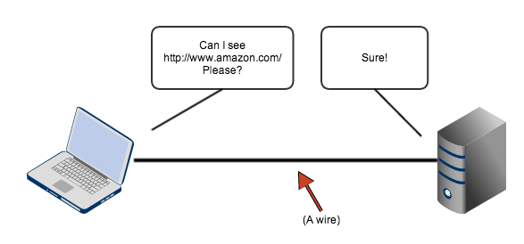
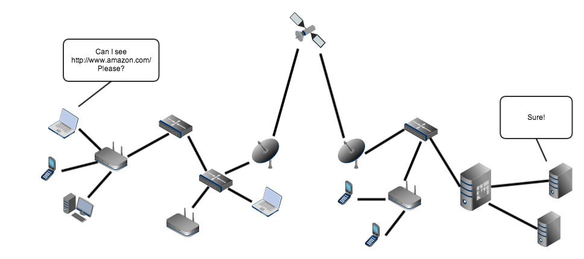
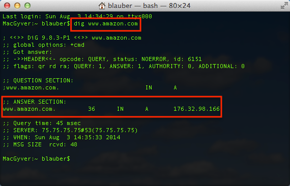

Let's start with what we know...
- We can all internet, right?
- So, let's visit a web page
- Like this one:
LET'S HEAR IT FOR THE INTERNET!!!
Okay, more seriously...
- Nowadays, the internet is commonplace,
- so, we take it for granted.
- Let's actually examine what happened.
Where did that web page come from?
- Is my computer running the entire internet?
- Is my computer running Amazon.com?
- Is some other computer running Amazon.com?
So, was it something like this?

Well... kinda
But...
My computer isn't connected directly to Amazon.com's server. So, it's really more like this:

(Except, worse)
How did my computer's request reach Amazon.com???
- The request's destination was determined.
- The request was routed to the destination.
Didn't we know the destination already?
- Not exactly.
- We knew the server's domain name
- We needed the server's network address
What's a Domain Name?
www.amazon.com
- It's a "more memorable" name for a server
- (at least, compared to a network address)
How do we get the network address?
176.32.98.166
- Via the DNS protocol.
- DNS stands for "Domain Name System".
- It produces a list of network addresses that are associated with a domain name.
You can query DNS via the 'dig' command!

How do we route the request to the network address?
- There are several protocols that help with this:
- BGP: Border Gateway Protocol
- IS-IS: Intermediate System - Intermediate System
- OSPF: Open Shortest Path First
- But, these are beyond the scope of this presentation.
Okay. So what?
- Well...
- The data passes through many servers during its journey.
- Let's add a proxy server to this path.
- This will allow us to intercept and observe the data.
Here are some freely available proxy servers
That looked important. What was it?
- That was HTTP, the HyperText Transfer Protocol.
- It allows clients to request resources from servers.
HTTP Request
GET / HTTP/1.1
Host: www.amazon.com
User-Agent: Mozilla/5.0 (X11; Ubuntu; Linux x86_64; rv:30.0) Gecko/20100101 Firefox/30.0
Accept: text/html,application/xhtml+xml,application/xml;q=0.9,*/*;q=0.8
Accept-Language: en-US,en;q=0.5
Accept-Encoding: gzip, deflate
Cookie: x-wl-uid=19hjJTOfKZ8ZX3plg0k6rLXNc+QO1ja5YDdgSm0w/iT7KqBTfq3u+9wnG3zB9J9Anj0tx/ehgoAg=; session-id-time=2082787201l; session-id=188-4865042-5922907; s_nr=1378666121578-New; s_vnum=1810665824270%26vn%3D1; s_dslv=1378666121581; ubid-main=181-7824637-2863522; session-token=Wwj/RQ58DUMxlaq+Nsb0NvL8DlbuFfnTlHY1LpfSr5eVNJViv/yaGzVxcVrIqyJRstcvdqNQQDmyiqEoJUuQw5KVrCBZBNNsDs6V0Gt+00Hrpeqhr7xCz7w+zbKH/tD9J6y1d7F80F3Gc4S6tz+jfb0ylIu5Ubi+2MbOCiV1ZURlvMpVr5gV6pag0jfgTWyqy/137EgdJiJfHC91uDf/wZM8XmGhl6G2p1yYuRDANNl6/K3Xay+jli243loFA7b5
Connection: keep-alive
Notice that the client is:
- Using the HTTP/1.1 protocol.
- Contacting www.amazon.com.
- GETting the "/" resource.
- Providing cookies to the server.
What's a cookie?
- Cookies are a way of tracking state across multiple requests.
- Servers instruct the browser to save cookies.
- Browsers show the cookies to the server on each request.
HTTP Response
HTTP/1.1 200 OK
Date: Sun, 03 Aug 2014 19:24:29 GMT
Server: Server
Set-Cookie: skin=noskin; path=/; domain=.amazon.com
pragma: no-cache
cache-control: no-cache
x-frame-options: SAMEORIGIN
expires: -1
Vary: Accept-Encoding,User-Agent
Content-Type: text/html; charset=ISO-8859-1
Set-cookie: ubid-main=181-7824637-2863522; path=/; domain=.amazon.com; expires=Tue, 01-Jan-2036 08:00:01 GMT
Content-Length: 249071
<!DOCTYPE html PUBLIC "-//W3C//DTD HTML 4.01 Transitional//EN"
"http://www.w3.org/TR/html4/loose.dtd">
<html>
<head>